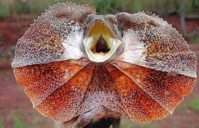

2-Tiene “alas” hechas de costillas
Sus alas no son alas verdaderas. Son membranas de piel sostenidas por costillas
largas que se abren hacia los lados cuando el animal salta.
3-Puede planear bastante lejos
Un Draco volans puede planear hasta unos 8–10 metros entre árboles mientras
controla la dirección con su cola.
4-Vive principalmente en Asia
Se encuentra en bosques tropicales del sudeste asiático, especialmente en
países como Indonesia, Malasia y Filipinas.
5-Se alimenta sobre todo de hormigas
Su comida favorita son hormigas y pequeños insectos, que captura mientras.